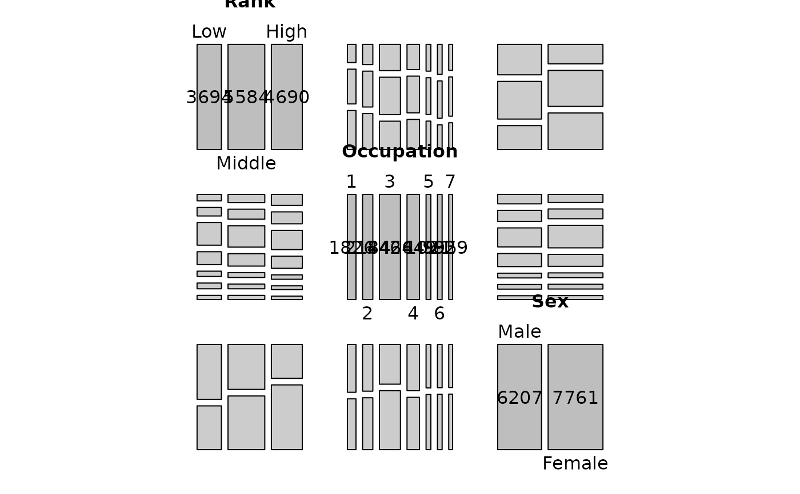
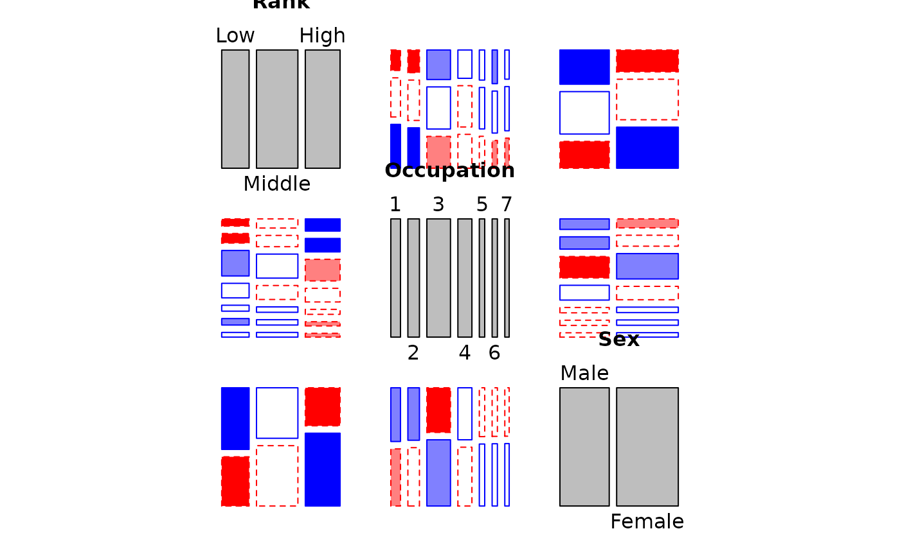

Diagonal Panel Function for Pairs Plots of Contingency Tables
Source:R/pairs_diagonal_mosaic.R
pairs_diagonal_mosaic.RdAn enhanced replacement for pairs_diagonal_mosaic from the
vcd package. This version fixes two bugs in the original (the
labeling and alternate_labels arguments were hardcoded and
ignored) and changes the default labeling to
labeling_border.
Arguments
- split_vertical
Logical; passed to
mosaic. Default isTRUE.- margins
A
unitobject giving the margins around the mosaic. Default isunit(0, "lines").- offset_labels
Numeric; offset for the cell labels. Default is
-0.4.- offset_varnames
Numeric; offset for the variable name labels. Default is
0.- gp
A
gparobject for the mosaic tiles, orNULL(default) to usefill.- fill
Either a color name or a function mapping an integer to a vector of colors (e.g. a shading function). Default is
"grey".- labeling
A labeling function such as
labeling_borderorlabeling_values. Default islabeling_border(no cell counts shown).- alternate_labels
Logical; whether to alternate label positions on the axes. Default is
TRUE.- ...
Additional arguments passed to the vcd
pairs.tablemethod.- x
A contingency table (object of class
"table").- diag_panel
A
"grapcon_generator"function or a panel function for the diagonal cells. Defaults to the vcdExtra version ofpairs_diagonal_mosaic.
Value
A function of class "grapcon_generator" suitable for use as
the diag_panel argument in pairs.table.
Details
A companion pairs.table method is also provided that uses this
improved function as the default diagonal panel.
The function follows the "grapcon_generator" pattern used throughout
vcd: calling pairs_diagonal_mosaic(...) returns a
function suitable for passing as the diag_panel argument of
pairs.table.
The original vcd::pairs_diagonal_mosaic has two bugs: (1) the
labeling argument is accepted but then hardcoded to
labeling_values inside the returned function, and (2)
alternate_labels is similarly hardcoded to TRUE. This version
fixes both, making those arguments work as documented.
The default labeling scheme was changed from labeling_values to
labeling_border, so as to disable cell counts by default. To
enable cell counts, use labeling_values.
pairs.table is an S3 method for pairs that
overrides the version in vcd solely to change the default
diag_panel to the improved pairs_diagonal_mosaic defined in
this package. All actual rendering is delegated to the vcd implementation,
retrieved via utils::getFromNamespace() to avoid a ::: check NOTE.
Examples
data(Hoyt, package = "vcdExtra")
pred_tab <- margin.table(Hoyt, c("Rank", "Occupation", "Sex"))
# Default: no cell counts in diagonal panels
pairs(pred_tab)
 # Show cell counts in diagonal panels
pairs(pred_tab, diag_panel_args = list(labeling = labeling_values))
# Show cell counts in diagonal panels
pairs(pred_tab, diag_panel_args = list(labeling = labeling_values))

# Use residual shading for off-diagonal panels
pairs(pred_tab, gp = shading_Friendly)
